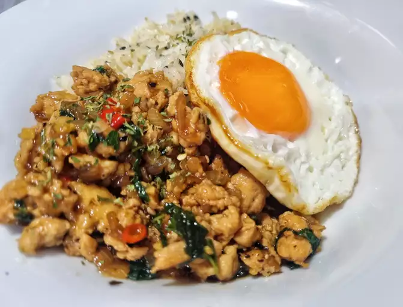

Pad Krapow Gai (ผัดกระเพราไก่)

About Pad Krapow
Pad Krapow is a classic Thai street food dish with lots of heat and flavor.
By making it yourself you can tailor this mouth-watering dish to your own spice level. (I still recommend making it as spicy ass possible though.)
Ingredients
Serves: 1
Optional, fried egg
- 1 egg
- 2 TBSP of non-flavored oil
Pad Krapow Gai
- 200 g boneless chicken
- 5 cloves of garlic
- 4-10 Thai chillies
- 1 TBSP of oil for frying
- 1 TSP of oyster sauce
- 1/2 TSP light soy sauce
- 1 splash of dark soy sauce or kecap manis
- 1/2 TSP of sugar
- 1 big handful of holy basil leaves
Serve with as much rice as you want.
Cooking directions:
Frying the egg
- Heat the oil in a wok or pan on high-medium heat.
- When the oil is hot. Drop in the egg and let it bubble up while simultaneously splashing some of the hot oil on top of the egg. Do not flip the egg.
- Fry the egg for as long as you prefer, take it out and drain from any excess oil. Put it on a plate for later.
Cooking the chicken
- Cut the chicken into small bite sized pieces.
- Rinse and peel the garlic and chillies. Pound them in a mortal and pestle.
- Pluck a handful of holy basil leaves off the stems.
- Heat your wok on high heat and add oil to the pan.
- Add chillies and garlic when the oil is hot.
- Stir fry the chillies and garlic for about 20 seconds. They should be fragrant but not dry or burnt.
- Add your chicken and keep stir-frying. Cook until chicken is mostly done (about 2-3 minutes). If it starts to dry out add some water.
- Add all the remaining seasoning and stir-fry for another 30 seconds.
- Grab the basil and toss it into the wok. Fold it into the chicken and immediately remove the wok from the heat.
Serve!